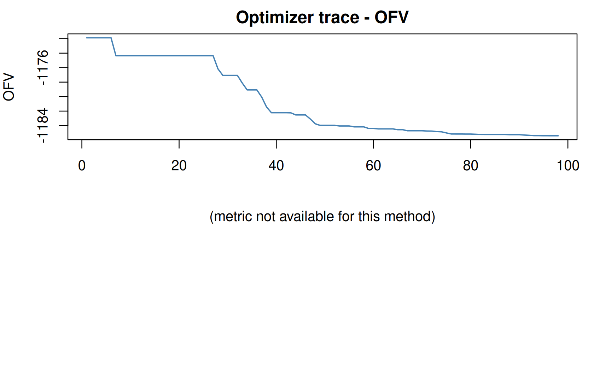

DATA → MODEL → ESTIMATE ⇄ EVALUATE → SIMULATE → REPORT
Estimation methods and controlling the fit
Where you are
Initial estimates and a first fit fitted the base model with the method from its model file (FOCEI). ferx offers several estimation methods, and every method and optimizer can be tuned. This chapter shows how to choose a method, chain methods, follow what the optimizer does, and control the fit through settings. It ends with multi-start and background fits.
The data
The base model of the workflow thread, plus the smaller warfarin example for the method comparison:
base <- ferx_example("two_cpt_oral_base")
warf <- ferx_example("warfarin")Estimation methods
method selects the estimator:
method |
Estimator | Notes |
|---|---|---|
"foce" |
First-order conditional estimation | |
"focei" |
FOCE with interaction | The default when neither the call nor the model file sets a method |
"laplace" |
Laplace approximation with the exact Hessian | Reports a different OFV than "focei". With n_agq > 1 it becomes adaptive Gauss-Hermite quadrature |
"gn", "gn_hybrid"
|
Gauss-Newton; the hybrid finishes with a FOCEI polish step | |
"saem" |
Stochastic approximation EM | Stochastic: set seed for reproducibility |
"imp" |
Importance-sampling Monte Carlo EM | With imp_eval_only = TRUE it only evaluates −2 log L and must be the last chain stage |
"impmap" |
Importance sampling assisted by the mode a posteriori | Requires mu-referencing; no IOV yet |
"bayes" |
Full MCMC | Posterior summaries in fit$bayes instead of a covariance step |
vi (model file only) |
Variational inference | Set in [fit_options]; not accepted by the method argument (see below) |
The ferx-core estimation methods pages describe each algorithm. The same warfarin model fitted with each method:
methods <- c("foce", "focei", "laplace", "gn", "gn_hybrid", "saem", "imp", "impmap", "bayes")
method_fits <- lapply(methods, function(m) {
start <- Sys.time()
# suppress the R warnings that report overriding the model file's method
f <- suppressWarnings(ferx_fit(warf$model, warf$data, method = m, verbose = FALSE))
data.frame(method = m, converged = f$converged, ofv = round(f$ofv, 2),
TVCL = signif(f$theta[["TVCL"]], 4),
seconds = round(as.numeric(difftime(Sys.time(), start, units = "secs")), 1))
})
do.call(rbind, method_fits)
#> method converged ofv TVCL seconds
#> 1 foce TRUE -280.36 0.1330 0.2
#> 2 focei TRUE -286.00 0.1327 0.1
#> 3 laplace TRUE -285.97 0.1327 0.6
#> 4 gn TRUE -280.36 0.1329 0.0
#> 5 gn_hybrid TRUE -280.36 0.1330 0.3
#> 6 saem TRUE -279.93 0.1327 0.1
#> 7 imp TRUE -279.93 0.1327 75.2
#> 8 impmap TRUE -279.93 0.1327 2.7
#> 9 bayes TRUE -593.69 0.1329 1.5The estimates are close, but OFVs are not comparable across methods. Each method computes the objective function under its own approximation. Compare OFVs only between fits made with the same method, as in Model development and selection.
Minimal runnable call
Pass method to override the model file. A character vector runs a chain: each stage starts from the previous stage’s estimates, and only the last stage produces the covariance step and diagnostics.
fit_chain <- ferx_fit(base$model, base$data, method = c("saem", "focei"), verbose = FALSE)
#> Warning: Model file [fit_options] sets `method = focei` but ferx_fit() argument
#> overrides it with `saem, focei`. The call-time value will be used.
fit_chain$method_chain
#> [1] "SAEM" "FOCEI"
c(converged = fit_chain$converged, ofv = fit_chain$ofv)
#> converged ofv
#> 1.000 -1185.217Reading the result
Following the optimizer
With optimizer_trace = TRUE ferx records one row per objective evaluation. ferx_trace() returns it as a data frame:
fit <- ferx_fit(base$model, base$data, optimizer_trace = TRUE, verbose = FALSE)
trace <- ferx_trace(fit)
dim(trace)
#> [1] 98 39
head(trace[, c("iter", "method", "ofv", "wall_ms", "grad_norm", "step_norm", "optimizer")])
#> iter method ofv wall_ms grad_norm step_norm optimizer
#> 1 1 focei -1171.88242 8 NA NA bobyqa
#> 2 2 focei -1060.52606 15 NA 0.500000 bobyqa
#> 3 3 focei -68.00626 24 NA 0.707107 bobyqa
#> 4 4 focei -1005.78590 27 NA 0.707107 bobyqa
#> 5 5 focei -991.99282 34 NA 0.707107 bobyqa
#> 6 6 focei -1132.81660 37 NA 0.707107 bobyqaplot() on a fit draws the trace. By default (monotonic = TRUE) the OFV panel shows the running minimum for FOCE/FOCEI, because their traces include rejected line-search trial points. log_ofv = TRUE shifts the OFV by its minimum; despite the name, it is not a log transform:
plot(fit)
Run logs
ferx_runlog() writes a plain-text record of the run: model file, data summary, estimates with initial values, settings, OFV, covariance diagnostics, shrinkage and runtime. With verbose = FALSE it returns the text instead of printing it, which is convenient for saving next to the results:
log_text <- ferx_runlog(fit, verbose = FALSE)
log_lines <- strsplit(log_text, "\n")[[1]]
start_line <- grep("PARAMETER ESTIMATES", log_lines)
cat(log_lines[(start_line - 1):(start_line + 14)], sep = "\n")
#> ============================================================
#> PARAMETER ESTIMATES
#> ------------------------------------------------------------
#> PARAMETER INITIAL FINAL SE %RSE
#> --------------------------------------------------------------------------------
#> TVCL 5 4.46476 0.3217 7.2%
#> TVV1 50 48.2422 3.103 6.4%
#> TVQ 10 9.58425 0.413 4.3%
#> TVV2 100 93.7877 3.433 3.7%
#> TVKA 1.2 1.24747 0.09754 7.8%
#> ETA_CL 0.1 0.155125 0.04018 25.9%
#> ETA_V1 0.1 0.119905 0.03256 27.2%
#> ETA_Q 0.05 0.0525744 0.01445 27.5%
#> ETA_V2 0.05 0.0384571 0.01051 27.3%
#> ETA_KA 0.15 0.175835 0.04869 27.7%
#> PROP_ERR 0.02 0.01962 0.001123 5.7%With a trace, show_iterations = TRUE (default) adds an iteration history, shortened to its first and last 10 rows for long runs. gradient_tol sets the relative-gradient threshold used in its convergence checks. ferx_runlog_iters() prints the full iteration history:
iters <- ferx_runlog_iters(fit, verbose = FALSE)
cat(head(strsplit(iters, "\n")[[1]], 10), sep = "\n")
#> ============================================================
#> ITERATION HISTORY
#> ------------------------------------------------------------
#> ITER OFV dOFV STEP_NORM
#> ---- ------------- ------------- -----------
#> 1 -1171.88 --- NA
#> 2 -1060.53 +111.356 0.5
#> 3 -68.0063 +992.52 0.7071
#> 4 -1005.79 -937.78 0.7071
#> 5 -991.993 +13.7931 0.7071Options that matter
Arguments of ferx_fit()
| Argument | Default | Meaning |
|---|---|---|
method |
NULL |
Estimation method or chain (above) |
threads |
NULL |
Worker threads for the per-subject loops; NULL uses available cores minus one, at most 8 |
gradient |
NULL |
Inner-loop gradient: "auto" (analytic where available) or "fd" (finite differences); NULL uses the model file |
optimizer_trace |
FALSE |
Record the optimizer trace |
settings |
NULL |
Named list of engine settings (tables below); a key that duplicates a dedicated argument is an error |
The base model’s file requests finite differences (gradient = fd). With "auto" the analytic gradient is used and the fit takes fewer objective evaluations. Pinning threads changes speed, not results:
fit_auto <- ferx_fit(base$model, base$data, gradient = "auto", verbose = FALSE)
#> Warning: Model file [fit_options] sets `gradient = fd` but ferx_fit() argument
#> overrides it with `auto`. The call-time value will be used.
fit_1thread <- ferx_fit(base$model, base$data, threads = 1, verbose = FALSE)
data.frame(
fit = c("model file (fd)", "gradient = auto", "threads = 1"),
gradient_used = c(fit$gradient_used, fit_auto$gradient_used, fit_1thread$gradient_used),
evaluations = c(fit$n_iterations, fit_auto$n_iterations, fit_1thread$n_iterations),
threads = c(fit$n_threads_used, fit_auto$n_threads_used, fit_1thread$n_threads_used),
ofv = c(fit$ofv, fit_auto$ofv, fit_1thread$ofv)
)
#> fit gradient_used evaluations threads ofv
#> 1 model file (fd) fd 98 3 -1185.403
#> 2 gradient = auto analytic 74 3 -1185.462
#> 3 threads = 1 fd 98 1 -1185.403Helper functions
| Function | Arguments |
|---|---|
ferx_trace() |
fit (a fit, or a path to a trace CSV) |
ferx_runlog() |
fit, gradient_tol (default 0.1), show_iterations (default TRUE), verbose (FALSE returns the text) |
ferx_runlog_iters() |
fit, verbose
|
ferx_conddist() |
fit (a SAEM fit with conddist = TRUE) |
ferx_fit_async() |
model, data, further ferx_fit() arguments, tail_n, poll_interval
|
ferx_collect() |
handle (a ferx_job), verbose
|
ferx_stop() |
handle |
Settings
Everything else is set through settings = list(key = value), or with the same key in the model’s [fit_options]. The tables below are generated from the ferx-core fit options documentation and ?ferx_fit for the pinned build.
Run control
book_settings_table(c("maxiter", "optimizer_trace", "checkpoint", "checkpoint_interval_secs"))| Setting | Values | Default | Description |
|---|---|---|---|
maxiter |
integer | 500 |
Maximum outer loop iterations. maxiter = 0 is evaluation only: the engine runs one inner EBE solve at the initial parameters and reports the objective there with no outer optimisation — useful for scoring a fixed parameter set or computing standard errors at known estimates (with covariance = true). |
optimizer_trace |
true, false
|
false |
Write a per-iteration CSV to /tmp/ferx_trace_<pid>_<ts>.csv. |
checkpoint |
true, false
|
true |
Periodically save a resume point so a run that is interrupted (e.g. Ctrl-C, a crashed job) can be restarted from where it stopped instead of from scratch. |
checkpoint_interval_secs |
integer | 300 |
Minimum wall-clock seconds between checkpoint writes. Larger values reduce I/O overhead but lose more progress on an interrupt; smaller values save more often. |
Outer optimizer
book_settings_table(c("optimizer", "outer_xtol", "outer_ftol", "stagnation_guard",
"reconverge_gradient_interval", "steihaug_max_iters",
"global_search", "global_maxeval"))| Setting | Values | Default | Description |
|---|---|---|---|
optimizer |
auto, bobyqa, slsqp, nlopt_lbfgs, mma, trust_region (plus deprecated aliases bfgs/lbfgs → nlopt_lbfgs) |
auto |
Outer-loop optimisation algorithm. Applies to method = foce / focei and to the FOCEI polish phase of method = gn_hybrid. |
outer_xtol |
float | 1e-4 |
Relative step tolerance: how far the optimizer’s step must shrink before it declares success. |
outer_ftol |
float | auto | Relative objective tolerance: the relative OFV change below which the optimizer stops. |
stagnation_guard |
true |
Short-circuit the NLopt-based outer optimizers once recent evals show no OFV improvement above 1e-3 over a window of 3*(n+1).max(50) evals. |
|
reconverge_gradient_interval |
integer ≥ 0 | 0 |
How often to re-solve each subject’s inner EBE loop during the population gradient instead of holding the EBEs (η̂) and FOCE Hessian fixed. |
steihaug_max_iters |
integer | adaptive | Max CG iterations for the Steihaug subproblem (only used when optimizer = trust_region). |
global_search |
true, false
|
false |
Run NLopt CRS2-LM (Controlled Random Search with Local Mutation) as a gradient-free global pre-search before the local optimizer. |
global_maxeval |
integer |
0 (auto: 30 * (n_params + 1)) |
Maximum evaluations of the FOCE objective during the global pre-search. |
Inner loop (individual random effects)
book_settings_table(c("inner_optimizer", "inner_maxiter", "inner_tol", "inner_restarts",
"ebe_warm_start", "max_unconverged_frac", "min_obs_for_convergence_check"))| Setting | Values | Default | Description |
|---|---|---|---|
inner_optimizer |
auto, bfgs, lbfgs, nelder_mead
|
auto |
Inner-loop (per-subject EBE) optimisation algorithm. auto uses dense BFGS, switching to limited-memory L-BFGS above 32 random effects. |
inner_maxiter |
integer | 200 |
Max iterations for the inner (per-subject EBE) optimizer |
inner_tol |
float | 1e-5 |
Gradient-norm convergence tolerance for the inner (per-subject EBE) optimizer. |
inner_restarts |
integer | 1 |
Guarded multi-start count for the inner (per-subject EBE) optimizer, to escape a multimodal individual objective. |
ebe_warm_start |
false |
When an inner per-subject EBE solve fails its BFGS step and falls back to Nelder–Mead, warm-start the simplex from the BFGS partial η̂ rather than cold-starting from the prior mode η=0. | |
max_unconverged_frac |
0.1 |
Fraction of subjects (with at least min_obs_for_convergence_check observations) allowed to have unconverged EBEs before the outer optimizer rejects the step (returns OFV = ∞). |
|
min_obs_for_convergence_check |
2 |
Subjects with fewer than this many observations are excluded from the max_unconverged_frac check (they still run normally). |
Choosing the outer optimizer on warfarin:
optimizers <- c("bobyqa", "slsqp", "nlopt_lbfgs", "mma", "trust_region")
do.call(rbind, lapply(optimizers, function(o) {
f <- ferx_fit(warf$model, warf$data, settings = list(optimizer = o), verbose = FALSE)
data.frame(optimizer = f$optimizer_label, converged = f$converged, ofv = round(f$ofv, 4),
evaluations = f$n_iterations)
}))
#> optimizer converged ofv evaluations
#> 1 bobyqa TRUE -280.3588 64
#> 2 slsqp TRUE -280.3640 86
#> 3 nlopt_lbfgs TRUE -280.3640 69
#> 4 mma TRUE -280.3640 61
#> 5 trust_region TRUE -280.3640 42The optimizers agree to within a small tolerance on this model. A clearly higher OFV for one optimizer would point to a convergence problem with it on your model. global_search = TRUE runs a global search before the local optimizer:
Multi-start
n_starts > 1 runs several fits from perturbed starting values and keeps the converged result with the lowest OFV. Start 0 always uses the model file’s exact values; the rest are perturbed by start_sigma. It is worth reaching for on the surfaces that are prone to local minima – Michaelis-Menten elimination and its VMAX/KM ridge, a full block omega over three or more etas, or many correlated covariate parameters – and the starts share the same thread pool as the per-subject loops, so the wall time grows with the number of starts rather than staying flat – the timing below shows what it costs on this machine. Widen start_sigma when the surface is ridge-shaped rather than merely bumpy. The bundled mm_multistart model (Michaelis-Menten elimination) sets n_starts = 8 in its model file:
book_settings_table(c("n_starts", "start_sigma", "multi_start_seed"))| Setting | Values | Default | Description |
|---|---|---|---|
n_starts |
1 |
Number of independent optimization runs. 1 disables multi-start (no behaviour change). |
|
start_sigma |
0.3 |
Log-space perturbation applied to initial theta values for starts 1..n. | |
multi_start_seed |
42 |
RNG seed for the multi-start theta perturbations. Independent of seed (SAEM) so that changing the SAEM seed does not silently alter which perturbed starting points are used in FOCE multi-start runs. |
mm <- ferx_example("mm_multistart")
ferx_model_get_section(mm$model, "fit_options")
#> # [fit_options]
#> method = focei
#> maxiter = 500
#> covariance = true
#> n_starts = 8
#> start_sigma = 0.5 # wider perturbation for a ridge-shaped surface
#> multi_start_seed = 42
start <- Sys.time()
fit_single <- ferx_fit(mm$model, mm$data, settings = list(n_starts = 1), verbose = FALSE)
#> Warning: Model file [fit_options] sets `n_starts = 8` but ferx_fit() argument
#> overrides it with `1`. The call-time value will be used.
single_s <- as.numeric(difftime(Sys.time(), start, units = "secs"))
start <- Sys.time()
fit_multi <- ferx_fit(mm$model, mm$data, verbose = FALSE)
multi_s <- as.numeric(difftime(Sys.time(), start, units = "secs"))
data.frame(fit = c("single start", "8 starts"), ofv = c(fit_single$ofv, fit_multi$ofv),
seconds = round(c(single_s, multi_s), 1))
#> fit ofv seconds
#> 1 single start -453.3985 2.4
#> 2 8 starts -453.3985 18.9
ferx_get_warnings(fit_multi, as_df = TRUE)[, c("severity", "category", "message")]
#> severity category
#> 1 info multi_start
#> message
#> 1 Multi-start: best result from start 5/8 (OFV = -453.3985)On this build the single start already reaches the same OFV, so here the extra starts only confirm it, at several times the wall time. That is the outcome you hope for rather than evidence that multi-start is unnecessary – the alternative is not knowing whether the one start you ran was the good one. The multi_start note reports which start won.
The two remedies for a stuck fit overlap, and ferx says how it resolves that rather than leaving you to guess. The global pre-search ignores its starting point by design, so running it on every perturbed start would overwrite the perturbation; instead it runs on start 0 only, and the remaining starts are ordinary perturbed local fits:
fit_both <- ferx_fit(warf$model, warf$data, verbose = FALSE,
settings = list(global_search = TRUE, global_maxeval = 200, n_starts = 2))
both_notes <- ferx_get_warnings(fit_both, as_df = TRUE)
both_notes[both_notes$category == "optimizer_config", "message"]
#> [1] "global_search = true with n_starts = 2: CRS2-LM only runs on start 0 (it ignores the starting point and would override the theta perturbation on starts 1..2)"So the two do combine, with the division of labour the note describes: the global search looks for the basin from the file’s own values, and the perturbed starts probe around it. The note is info, not a refusal.
SAEM
The bundled warfarin_saem model sets its SAEM options in the model file. With conddist = TRUE, SAEM also samples each subject’s conditional distribution of the random effects after fitting. ferx_conddist() returns it:
book_settings_table(c("n_exploration", "n_convergence", "n_mh_steps", "n_leapfrog",
"adapt_interval", "omega_burnin", "mstep_damping", "seed",
"conddist", "conddist_nsamp", "conddist_burnin", "conddist_keep_samples"))| Setting | Values | Default | Description |
|---|---|---|---|
n_exploration |
150 |
Phase 1 iterations (step size = 1) | |
n_convergence |
250 |
Phase 2 iterations (step size = 1/k) | |
n_mh_steps |
20 |
Block Metropolis-Hastings steps per subject per iteration. Also sizes the componentwise decorrelating kernel that prevents block-Ω collapse (max(2, n_mh_steps / n_eta) sweeps; multi-η models only — skipped when n_eta < 2). |
|
n_leapfrog |
0 |
Leapfrog steps per HMC proposal (0 = use MH; see below). When > 0, subjects for which HMC is unavailable (ODE model, missing analytical PK path, non-finite Ω, unsupported TV-cov path) fall back to MH using n_mh_steps proposals. |
|
adapt_interval |
50 |
Iterations between step-size adaptation | |
omega_burnin |
20 |
Initial exploration iterations during which Ω (and ΩIOV) are held at their starting values while the MH chain warms up. | |
mstep_damping |
0.03 |
Exploration-phase cap on the stochastic-approximation step for the numerical θ/σ M-step, the θ-side counterpart of the per-iteration SA step cap SAEM already applies to Ω. | |
seed |
12345 |
RNG seed for reproducibility | |
conddist |
false |
Run a post-fit conditional-distribution pass estimating each subject’s p(η_i \| y_i) by MCMC. |
|
conddist_nsamp |
200 |
Retained MCMC draws per subject in the conditional-distribution pass. | |
conddist_burnin |
20 |
Burn-in draws discarded before accumulation, to forget the EBE-mode warm start. | |
conddist_keep_samples |
false |
Retain the raw per-subject draws (written to {model}-conddist-samples.csv), not just the mean/SD. |
ws <- ferx_example("warfarin_saem")
ferx_model_get_section(ws$model, "fit_options")
#> # [fit_options]
#> method = saem
#> n_exploration = 150
#> n_convergence = 250
#> n_mh_steps = 3
#> omega_burnin = 20 # iterations to hold Omega fixed while the sampler warms up
#> adapt_interval = 10 # MH proposal-scale adaptation cadence
#> seed = 12345
#> covariance = true
fit_saem <- ferx_fit(ws$model, ws$data, settings = list(conddist = TRUE), verbose = FALSE)
cond <- ferx_conddist(fit_saem)
cond
#> SAEM conditional distribution (200 draws retained, 20 burn-in)
#> Distribution-based eta-shrinkage:
#> ETA_CL -5.6%
#> ETA_V -5.0%
#> ETA_KA -5.0%
#>
#> ID ETA COND_MEAN COND_SD COND_MODE
#> 1 1 ETA_CL 0.029308245 0.002939857 0.030002617
#> 2 1 ETA_V 0.065748861 0.004663293 0.064998940
#> 3 1 ETA_KA 0.372730782 0.011909890 0.369643510
#> 4 2 ETA_CL 0.018002352 0.003408684 0.017418394
#> 5 2 ETA_V -0.063801443 0.005433916 -0.064266518
#> 6 2 ETA_KA -0.414697643 0.010833208 -0.413073353
#> 7 3 ETA_CL -0.022426204 0.003868924 -0.022657808
#> 8 3 ETA_V 0.088923706 0.005132530 0.090030047
#> 9 3 ETA_KA 0.148764983 0.012764152 0.151930699
#> 10 4 ETA_CL -0.026251575 0.004283847 -0.026823901
#> 11 4 ETA_V -0.210066766 0.006614206 -0.212381805
#> 12 4 ETA_KA -0.723472929 0.012435899 -0.730587922
#> 13 5 ETA_CL -0.231182511 0.004401300 -0.232201768
#> 14 5 ETA_V -0.121683101 0.005439804 -0.122532068
#> 15 5 ETA_KA 0.480965066 0.015358731 0.480732416
#> 16 6 ETA_CL -0.008639802 0.003335182 -0.008322144
#> 17 6 ETA_V 0.068798911 0.005207897 0.069426753
#> 18 6 ETA_KA 1.244822756 0.027102483 1.246014195
#> 19 7 ETA_CL 0.293327656 0.004131795 0.291552178
#> 20 7 ETA_V 0.065679302 0.006954962 0.061716438
#> 21 7 ETA_KA -0.659905033 0.012833817 -0.666333779
#> 22 8 ETA_CL 0.270623731 0.003548624 0.270246789
#> 23 8 ETA_V -0.017603411 0.004513912 -0.018951980
#> 24 8 ETA_KA -0.036782708 0.010032221 -0.040803873
#> 25 9 ETA_CL -0.262169635 0.004568516 -0.260367388
#> 26 9 ETA_V 0.092054735 0.005891140 0.092752035
#> 27 9 ETA_KA 0.098416618 0.013897749 0.098555180
#> 28 10 ETA_CL -0.059921946 0.003843741 -0.058906340
#> 29 10 ETA_V 0.038519506 0.006893983 0.037724912
#> 30 10 ETA_KA -0.500536351 0.013465913 -0.502019769print() on a ferx_conddist object shows the distribution-based shrinkage and the per-subject conditional mean, SD and mode. fit$saem_n_subjects_hmc reports how many subjects used HMC proposals (n_leapfrog > 0). It is not set here, because this model uses Metropolis-Hastings proposals.
Laplace and adaptive quadrature
book_settings_table(c("n_agq", "agq_eval_only"))| Setting | Values | Default | Description |
|---|---|---|---|
n_agq |
1 |
Gauss-Hermite nodes per random effect. 1 reproduces the Laplace approximation exactly; odd values are conventional (they keep a node at the mode). |
|
agq_eval_only |
See ?ferx_fit and the ferx-core fit options page. |
n_agq is the number of Gauss-Hermite nodes per random effect. The cost grows as n_agq to the power of the number of etas, so higher values suit models with few random effects. agq_eval_only uses quadrature only to evaluate the likelihood at a fitted point (see the ferx-core AGQ page).
fit_lap <- ferx_fit(warf$model, warf$data, method = "laplace", verbose = FALSE)
#> Warning: Model file [fit_options] sets `method = foce` but ferx_fit() argument
#> overrides it with `laplace`. The call-time value will be used.
fit_agq <- ferx_fit(warf$model, warf$data, method = "laplace", settings = list(n_agq = 3),
verbose = FALSE)
#> Warning: Model file [fit_options] sets `method = foce` but ferx_fit() argument
#> overrides it with `laplace`. The call-time value will be used.
c(laplace = fit_lap$ofv, agq_3_nodes = fit_agq$ofv)
#> laplace agq_3_nodes
#> -285.9702 -285.9739Gauss-Newton
book_settings_table("gn_lambda")| Setting | Values | Default | Description |
|---|---|---|---|
gn_lambda |
Levenberg-Marquardt damping factor (default 0.01). Larger values make steps more conservative. |
Importance sampling
book_settings_table(c("imp_samples", "imp_proposal_df", "imp_seed", "imp_low_ess_threshold",
"imp_iterations", "imp_averaging", "imp_auto", "imp_defensive_alpha",
"imp_eval_only"))| Setting | Values | Default | Description |
|---|---|---|---|
imp_samples |
1000 |
Importance samples K per subject. 2000–5000 recommended for publication-quality MC SE. | |
imp_proposal_df |
5.0 |
Student-t proposal degrees of freedom (≥ 1), or normal/mvn for a multivariate-normal proposal. |
|
imp_seed |
12345 |
RNG seed. Same seed → identical result. | |
imp_low_ess_threshold |
0.1 |
Subjects with normalized ESS below this fraction get flagged in the result. | |
imp_iterations |
200 |
MCEM iterations (estimator only). | |
imp_averaging |
50 |
Terminal iterations averaged into the reported estimate (estimator only). | |
imp_auto |
true |
Adaptive sample count. When true, imp_samples is the starting count and is ramped up (×2/iteration, cap 10000) while the objective’s Monte-Carlo SE exceeds 1.0. |
|
imp_defensive_alpha |
0.0 |
Defensive-mixture weight (issue #528), opt-in. Each subject draws this fraction of its samples from the prior N(0, Ω) rather than the mode-centred proposal, and every sample is scored under the mixture density. |
|
imp_eval_only |
false |
true ⇒ evaluate −2 log L at fixed parameters; must be the terminal chain stage. |
A common use of imp is to evaluate the marginal likelihood at a FOCEI solution: the final stage of a chain, with imp_eval_only = TRUE. The result is in fit$importance_sampling:
fit_imp <- ferx_fit(base$model, base$data, method = c("focei", "imp"),
settings = list(imp_eval_only = TRUE, imp_seed = 1), verbose = FALSE)
#> Warning: Model file [fit_options] sets `method = focei` but ferx_fit() argument
#> overrides it with `focei, imp`. The call-time value will be used.
fit_imp$importance_sampling[c("minus2_log_likelihood", "mc_standard_error", "n_samples",
"ess_min", "ess_median")]
#> $minus2_log_likelihood
#> [1] -1185.468
#>
#> $mc_standard_error
#> [1] 0.3090902
#>
#> $n_samples
#> [1] 1000
#>
#> $ess_min
#> [1] 0.08389077
#>
#> $ess_median
#> [1] 0.7900041?ferx_fit notes that plain "imp" re-centers its proposal from the previous iteration’s samples and can be fragile on rich data. It recommends "impmap", or a warm start such as c("focei", "imp").
book_settings_table(c("impmap_iterations", "impmap_samples", "impmap_proposal_df", "impmap_seed",
"impmap_averaging", "impmap_low_ess_threshold", "impmap_trace",
"impmap_mceta", "impmap_sobol", "impmap_auto", "iscale_min", "iscale_max"))| Setting | Values | Default | Description |
|---|---|---|---|
impmap_iterations |
200 |
Number of MCEM iterations (parameter updates). | |
impmap_samples |
300 |
Importance samples K per subject per iteration. Larger K reduces Monte-Carlo noise at linear cost. | |
impmap_proposal_df |
4 |
Proposal degrees of freedom. A finite value ≥ 1 gives a heavier-tailed Student-t (default 4); normal (or mvn) gives a multivariate-normal proposal. |
|
impmap_seed |
12345 |
RNG seed. Same seed → identical estimates. | |
impmap_averaging |
50 |
Final iterations whose parameters are averaged into the reported estimate (Monte-Carlo variance reduction). | |
impmap_low_ess_threshold |
0.1 |
Subjects with normalized ESS below this fraction are flagged as poorly sampled. | |
impmap_trace |
false |
Logical; when TRUE, collect per-iteration parameter values into fit$impmap_trace. | |
impmap_mceta |
0 |
Number of additional random starting points for per-subject MAP optimization. | |
impmap_sobol |
false |
Use Sobol quasi-random sequences (with Cranley-Patterson randomization) for IS draws instead of pseudo-random. | |
impmap_auto |
true |
Adaptive sample count. When true, impmap_samples is the starting count and is ramped up (×2/iteration, cap 10000) while the objective’s Monte-Carlo SE exceeds 1.0. |
|
iscale_min |
0.1 |
Minimum proposal scaling factor for adaptive IS. The IS proposal covariance is multiplied by s² where s is chosen from [iscale_min, iscale_max] to maximise per-subject ESS. |
|
iscale_max |
10.0 |
Maximum proposal scaling factor. |
Bayesian estimation
book_settings_table(c("bayes_warmup", "bayes_iters", "bayes_chains", "bayes_thin", "bayes_seed"))| Setting | Values | Default | Description |
|---|---|---|---|
bayes_warmup |
Warmup (burn-in + adaptation) sweeps per chain, discarded from the posterior (default 1000). | ||
bayes_iters |
Retained sampling sweeps per chain, before thinning (default 1000). | ||
bayes_chains |
Number of independent chains (default 4); used for split-R-hat. | ||
bayes_thin |
Keep every bayes_thin-th sampling draw (default 1). | ||
bayes_seed |
Base RNG seed for the Bayes sampler. Independent of seed / saem_seed. |
fit_bayes <- ferx_fit(base$model, base$data, method = "bayes", verbose = FALSE)
#> Warning: Model file [fit_options] sets `method = focei` but ferx_fit() argument
#> overrides it with `bayes`. The call-time value will be used.
with(fit_bayes$bayes, data.frame(parameter = param_names, mean = mean, q025 = q025, q975 = q975,
rhat = rhat, ess_bulk = ess_bulk))
#> parameter mean q025 q975 rhat ess_bulk
#> 1 TVCL 4.42994688 3.82283388 5.08199490 0.9998546 3943.967363
#> 2 TVV1 46.99169965 39.97028309 53.91505849 1.0850996 13.728231
#> 3 TVQ 9.68518877 8.84756189 10.64458096 1.0209501 125.750296
#> 4 TVV2 94.97637491 88.17125062 102.22693974 1.0241141 79.800016
#> 5 TVKA 1.22542000 1.02828608 1.44539886 1.0624869 18.865097
#> 6 OMEGA(1,1) 0.16033959 0.09642671 0.26363395 0.9993805 3417.698746
#> 7 OMEGA(2,2) 0.14342095 0.07778548 0.25812295 1.1564621 9.085546
#> 8 OMEGA(3,3) 0.06031568 0.03284700 0.11055182 1.1941571 6.912396
#> 9 OMEGA(4,4) 0.04006741 0.02310083 0.06879589 1.0406014 31.764907
#> 10 OMEGA(5,5) 0.19610123 0.11042432 0.34074105 1.0579907 26.574942
#> 11 PROP_ERR 0.01981516 0.01761577 0.02241304 1.0069649 397.797126
fit_bayes$converged
#> [1] FALSEfit$bayes holds the posterior mean, median and 2.5%/97.5% quantiles, split-R-hat, effective sample sizes and Monte Carlo standard errors per parameter. Here the largest R-hat is 1.194, and the fit is marked unconverged with this warning:
Posterior intervals as a measure of parameter uncertainty are discussed in Parameter uncertainty.
Variational inference
Variational inference fits an approximate posterior of each subject’s random effects jointly with the population parameters, by maximizing a lower bound on the likelihood (the ELBO). ferx_fit()’s method argument does not accept it:
try(ferx_fit(base$model, base$data, method = "vi", verbose = FALSE))
#> Error in match.arg(normalised, c("foce", "focei", "laplace", "saem", "gn", :
#> 'arg' should be one of "foce", "focei", "laplace", "saem", "gn", "gn_hybrid", "imp", "impmap", "bayes"It runs when the model file sets it. A copy of the base model with method = vi in [fit_options]:
vi_model <- file.path(book_tempdir("estimation"), "two_cpt_oral_base_vi.ferx")
writeLines(sub("^ method = focei", " method = vi", readLines(base$model)), vi_model)
invisible(ferx_model_get_section(vi_model, "fit_options"))
#> # [fit_options]
#> method = vi
#> maxiter = 500
#> covariance = true
#> # Finite differences rather than the default `auto`. This was a workaround
#> # for ferx-core #1290: the analytic-gradient path used to stall at the
#> # initial estimates on this model and dataset (`NLopt stopped: Failure` on
#> # the first evaluation, no parameter moves), which a search then had to
#> # reject as an init-stalled base fit. That is fixed, and both paths now
#> # converge; `fd` is kept explicit so the example's published numbers do not
#> # move with the gradient default.
#> gradient = fd
fit_vi <- ferx_fit(vi_model, base$data, verbose = FALSE)
c(method = fit_vi$method, ofv = fit_vi$ofv)
#> method ofv
#> "VI" "NaN"The OFV is NaN by design: the ELBO is a lower bound, not −2 log-likelihood, and cannot be compared with other methods. The fit says so in a general warning. vi_final_ofv = "laplace" evaluates a Laplace OFV at the VI estimate. The vi_* settings can be passed with settings like any other:
# suppress the R warning about the model file's maxiter, which VI does not use
fit_vi_laplace <- suppressWarnings(ferx_fit(vi_model, base$data, settings = list(vi_final_ofv = "laplace"),
verbose = FALSE))
rbind(vi = c(ofv = fit_vi_laplace$ofv, fit_vi_laplace$theta), focei = c(ofv = fit$ofv, fit$theta))
#> ofv TVCL TVV1 TVQ TVV2 TVKA
#> vi -1182.477 4.415777 48.31684 9.555962 94.29259 1.259741
#> focei -1185.403 4.464758 48.24224 9.584246 93.78774 1.247467The estimates are close to FOCEI. The ELBO itself and VI’s per-subject posterior summaries are not part of the R fit object at this build.
book_settings_table(c("vi_iters", "vi_mc_samples", "vi_lr", "vi_grad_clip", "vi_family", "vi_kl",
"vi_omega_update", "vi_sigma_update", "vi_avg_last", "vi_eta_grad", "vi_final_ofv", "vi_seed"))| Setting | Values | Default | Description |
|---|---|---|---|
vi_iters |
25000 |
Adam ceiling, not a fixed budget — the run stops early once the objective and the estimates have both settled. | |
vi_mc_samples |
32 |
Monte-Carlo draws per subject per iteration. This sets the noise floor the settling test measures against, so it decides when the run stops as well as how noisy each step is; too few draws can settle early at the wrong answer. | |
vi_lr |
0.02 |
Adam learning rate. Lower it if the trace oscillates, or if σ settles above a FOCEI/AGQ fit of the same data. | |
vi_grad_clip |
1e4 |
Global-L2 gradient clip applied to every Adam step; 0 disables it. |
|
vi_family |
full_rank |
full_rank fits a full posterior covariance per subject; mean_field fits a diagonal one — O(d) rather than O(d²). |
|
vi_kl |
analytic |
How the KL(q ‖ N(0, Ω)) half is evaluated — analytic in closed form (only the data term is sampled) or mc. |
|
vi_omega_update |
closed_form |
closed_form sets Ω to its exact ELBO maximizer each iteration, keeping it out of the stochastic optimization; adam learns it with everything else. |
|
vi_sigma_update |
closed_form |
As vi_omega_update, for the residual error σ. See How σ is updated. |
|
vi_avg_last |
final 25% | Polyak averaging window, in iterations — the reported estimate is the mean over the final window rather than the last iterate. | |
vi_eta_grad |
auto |
auto uses the analytic Dual2 η-gradient where available and central finite differences where not; analytic and fd pin one route. |
|
vi_final_ofv |
none |
none leaves ofv as NaN, because the ELBO is a lower bound and is not comparable with a FOCEI OFV; laplace computes a comparable one. |
|
vi_seed |
20240704 |
Seed for the common random numbers. See Reproducibility. |
VI does not support non-Gaussian endpoints (time-to-event, binary). See the ferx-core variational inference page.
Running a fit in the background
In an interactive session, ferx_fit_async() starts the fit in a background process and returns a ferx_job handle immediately. It accepts the same model, data and other arguments as ferx_fit(). When R is not interactive (scripts, knitr, and so this book), it runs a normal fit and returns the result:
fit_bg <- ferx_fit_async(base$model, base$data, verbose = FALSE)
class(fit_bg)
#> [1] "ferx_fit"The handle functions therefore only make sense interactively. They are shown here without being run:
job <- ferx_fit_async(base$model, base$data, tail_n = 6, poll_interval = 0.5)
job # print(): status of the background job
plot(job) # trace so far
job$trace_path # path of the trace file, once written
fit <- ferx_collect(job, verbose = TRUE) # wait, showing progress, and return the fit
ferx_stop(job) # or: stop the jobtail_n is the number of recent trace rows shown per poll in ferx_collect(), and poll_interval is the time between polls in seconds.
Pitfalls
-
Unused options. An option that does not apply to the chosen method is ignored and reported with a
generalwarning, which lists the options the method does use. Here the model file’smaxiteris not used by SAEM:fit_saem_base <- ferx_fit(base$model, base$data, method = "saem", verbose = FALSE) #> Warning: Model file [fit_options] sets `method = focei` but ferx_fit() argument #> overrides it with `saem`. The call-time value will be used. w_saem <- ferx_get_warnings(fit_saem_base, as_df = TRUE) strwrap(w_saem$message[grepl("not used by method", w_saem$message)], 80) #> [1] "fit option `maxiter` is not used by method `SAEM` and will be ignored." #> [2] "Method-specific options for `SAEM`: adapt_interval, conddist, conddist_burnin," #> [3] "conddist_keep_samples, conddist_nsamp, inner_maxiter, inner_optimizer," #> [4] "inner_tol, mstep_damping, n_convergence, n_exploration, n_leapfrog, n_mh_steps," #> [5] "omega_burnin, saem_conddist, saem_mstep_damping, saem_n_leapfrog, saem_seed," #> [6] "seed" Convergence of stochastic methods. SAEM, IMP, IMPMAP and Bayes depend on the random seed and on their iteration or sample counts. Check
fit$bayes$rhatand the effective sample sizes, and the ESS infit$importance_sampling, before using the results.Do not compare OFVs across methods. Refit competing models with the same method.
Warnings you may see here
See the ferx-core warnings page for the full descriptions.
-
optimizer_health(warning): the trust region collapsed or the optimizer degenerated. Try a different optimizer or rescale parameters. -
gradient_fallback(info): a slower fallback gradient or sampler path was taken. -
mu_referencing(warning or info): mu-referencing is missing or partial. Prefer forms likeCL = TVCL * exp(ETA_CL)for SAEM and Bayes. -
optimizer_config(warning or info): a note on, or failure of, theglobal_searchconfiguration. -
multi_start(info): which start of a multi-start fit won. -
cancelled(info): the run was cancelled by the user. -
threads(info): a note on thread-count efficiency. -
flat_parameter(warning): a theta has no effect on the objective at its initial value and was frozen there. Map it into the model or remove it. -
init_outside_bounds(warning): an initial estimate lay outside an internal limit and was clamped before the first evaluation. -
parameter_at_runaway_guard(warning or critical): a parameter is pinned at a hidden optimizer guard.collapse(warning) means remove or simplify it;runaway(critical) means reject the fit. -
importance_sampling(warning): the effective sample size dropped to zero, or the proposal collapsed. Increase the samples or improve the proposal. -
vi_bad_basin(critical): the final bound-quality check of a VI fit failed, and the fit is marked unconverged. Try new starting values, or start from another method.
Summary
- Choose the estimator with
method, chain methods with a vector, and compare OFVs only within one method. - Follow the optimizer with
optimizer_trace = TRUE,ferx_trace(),plot(fit)andferx_runlog(). - Tune the fit through
settings. The generated tables above list every setting that controls estimation, and?ferx_fitdocuments them all.
Next: Diagnosing the model evaluates the fit.
TipReference
- R help:
?ferx_fit,?ferx_trace,?plot.ferx_fit,?ferx_runlog,?ferx_runlog_iters,?ferx_conddist,?ferx_fit_async,?ferx_collect,?ferx_stop - ferx-core: estimation methods, optimizers, fit options, warnings